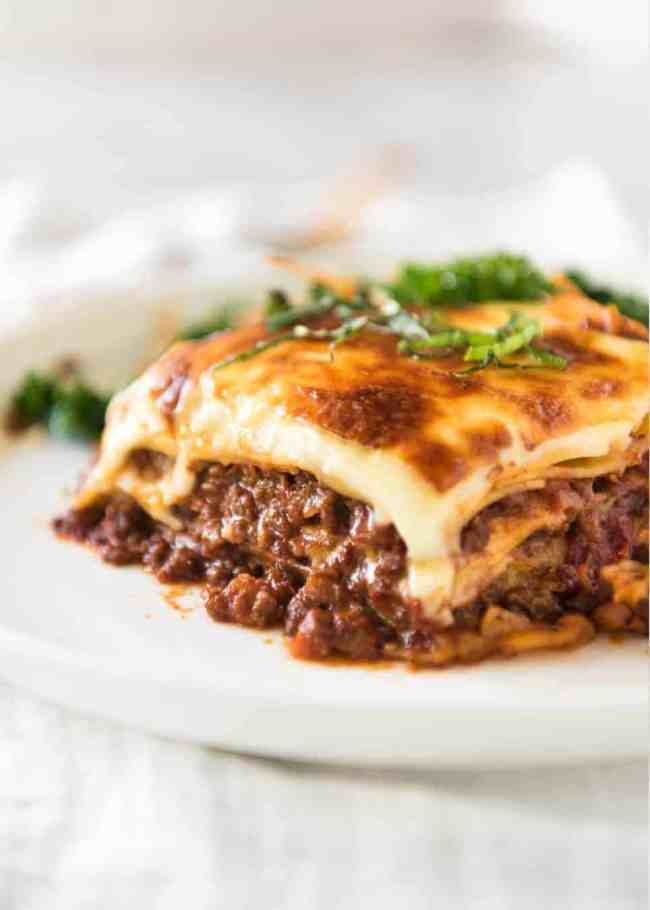

Lasagne

An Authentic Italian Lasagne
One of the most loved foods in the world is
finally here! This is a traditional Italian
Lasagna, made the Italian way with layers of
slow cooked Bolognese ragu and cheese sauce.
No ricotta – that’s the American-Italian version.
Ingredients
- Onion
- garlic
- carrot
- Celery
- Beef
- Canned tomato
- Tomato paste
- Red wine
- Beef bouillon cubes (stock cubes)
- Bay leaves
- Thyme
- Oregano
- Worcestershire sauce
- Butter
- Flour
- Milk
- Cheese
- Lasagne sheets
Method
-
Smear a bit of meat sauce on the base first.
This stops the lasagna sheets from sliding around.
-
First layer - Top with meat sauce and a bit of white sauce.
-
Second layer - Lay out more lasagna sheets, then top with more
meat sauce and more white sauce.
-
Third layer - Repeat again, lasagna sheets, meat sauce then
white sauce.
-
Topping - Cover with lasagna sheets. Pour over remaining white
sauce then sprinkle with cheese.